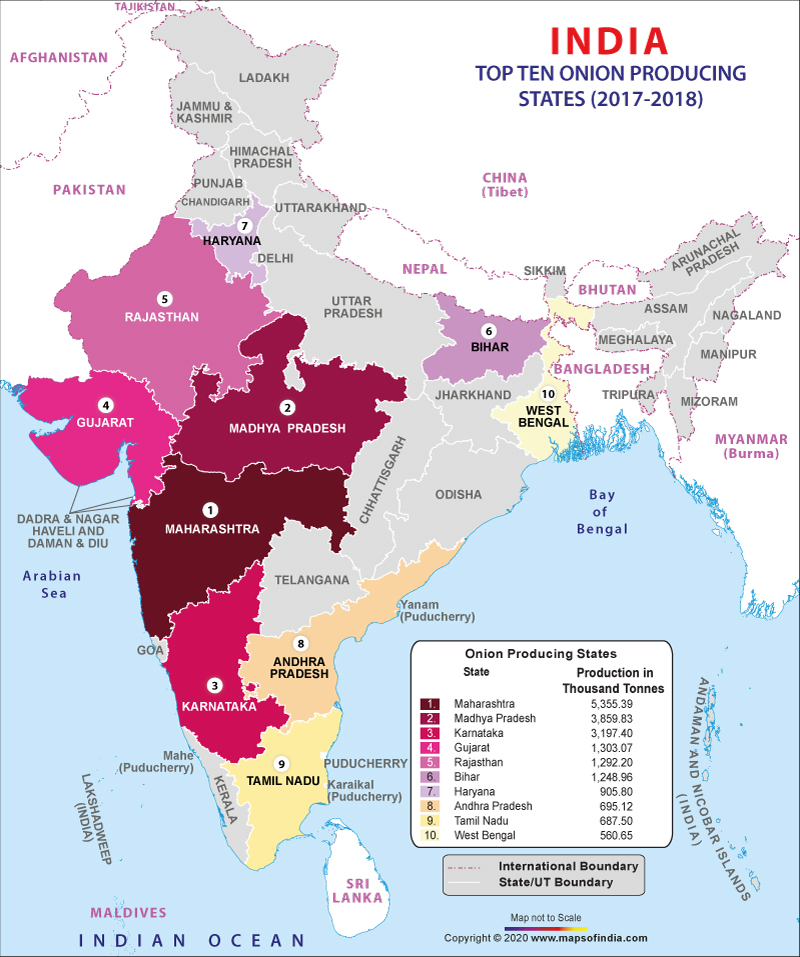

Onion cultivation is a very profitable business. Onion plant can be cultivated as a monocrop or intercrop.
Onion needs a temperate climate and alluvial soil to grow in. Depending on the onion growing time and place of cultivation, onion can be grown as long day onions (for plains) or short day onions (ideal for hilly regions).
Climate for Onion Farming: Although it is a temperate crop, onion cultivation can be possible under sub-tropical, temperate or tropical climate. A mild, gentle weather that is not too rainy, too cold or too hot is ideal for onion growing. However, it can withstand extreme weather conditions at younger stage. Short day onions that need 10-12 hours of day length are grown in plains while long day onions requiring 13-14 hours of day length are grown in the hilly areas. Onion crops need lower temperature and shorter day light (photoperiod) for vegetative growth while during the bulb development and maturity stage it needs a higher temperature and longer day light. Other requirements for onion cultivation are:
Soil for Onion Cultivation in India: Onions can be grown in all types of soils such as heavy soil, clayey soil, sandy loam, etc. However, red to black loamy soil with good drainage capacity is ideal for onion cultivation.
pH for Onion Growing: Soil with neutral pH (6.0 to 7.0) is optimal for onion cultivation. It can tolerate mild alkalinity (pH upto 7.5). They cannot survive if the soil pH drops below 6.0 owing to aluminum or manganese toxicity or trace element deficiency.
In India, Maharashtra and parts of Gujarat, MP, Karnataka, Haryana, UP, Bihar are major producing states.